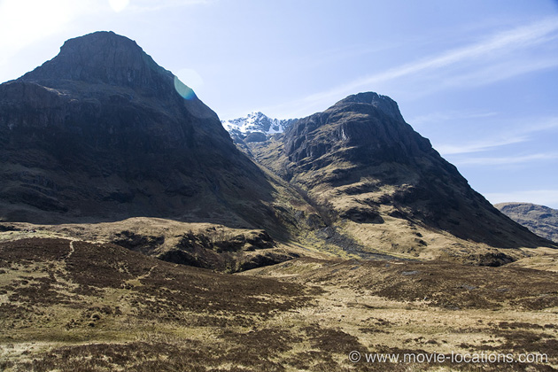
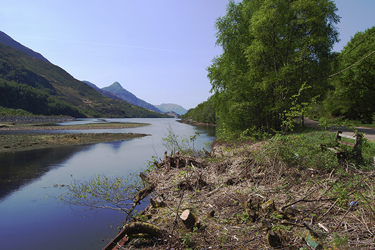
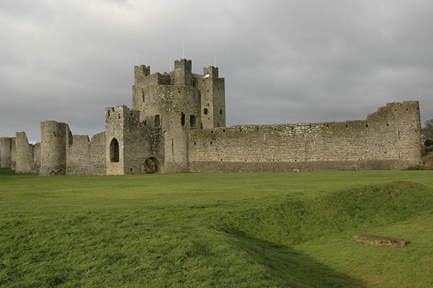
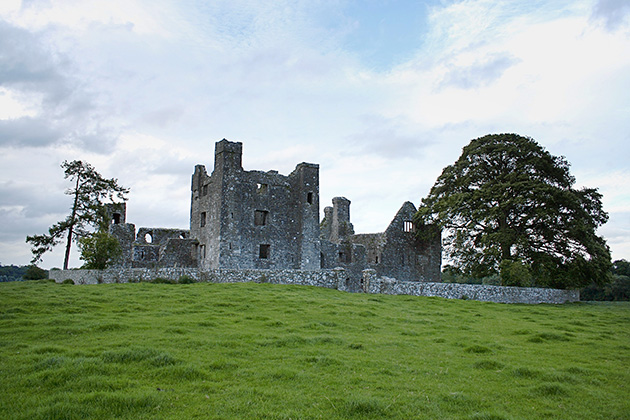

Braveheart
Main Content

Discover where Mel Gibson's epic Braveheart (1995) was filmed in the Scottish Highlands and in Ireland.
A reckless disregard for historical accuracy didn't prevent Mel Gibson’s two-dimensional tale of Scots hero William Wallace from snagging both Best Film and Best Director Oscars. The epic movie helped along by a solid cast, bloodily rousing battle scenes, James Horner’s swooningly romantic score and the awesome landscapes of the Scottish Highlands and – erm – Ireland.
There was a bit of controversy when it was announced that this quintessentially Scottish story was to be made largely in Ireland but, when it comes to filmmaking, the Republic is on the ball with tax breaks and the use of its army as extras.

The sweeping, mountainous landscapes couldn't be faked and really are the wild, rocky Highlands of Scotland, around Loch Leven and Glen Coe, filming in the some of the same areas as as Highlander.
The village of ‘Lanark’, where the young William Wallace grows up, and falls in love with Murron (Catherine McCormack), was constructed in the Glen Nevis Valley at the foot of Ben Nevis, the highest mountain peak in Britain. Although the set was dismantled after filming and the area returned to its former state, the Braveheart Car Park, constructed to service the location, has been retained.
The filming site is up the glen, past the car park, and below the road’s highest point. The design of the village houses was based on those of St Kilda, a tiny island off the Scottish coast, inhabited until the late 18th century, but now a tourist attraction.
As Wallace’s legend grows after the killing of Mornay (Alun Armstrong), his trek along the spectacular mountain path filmed on the Mamores, a group of ten mountains linked by a narrow ridge, stretching between Loch Leven itself and Glen Nevis. If you fancy yourself as a fit hillwalker, you should be able to walk the ten peaks in a day. Access to the ridges is gained either from the south at Kinlochleven, or from the north in Glen Nevis.
The interior of Mornay’s castle is another Scots location, filmed in Edinburgh Council Chamber, High Street, Edinburgh.
The rest of the film was shot in Ireland, within a 30 mile radius of the city of Dublin, where most of the interiors were filmed at the famous Ardmore Studios. Production Designer Tom Sanders does a terrific job of dressing up time-worn Irish castles to provide authentically solid backdrops.

The fortified English town of ‘York’ is Trim Castle, a massive ruin brought to life with extensive wooden buttresses and a gate that alone weighed seven tons.
The ‘London square’ was also created at Trim, on the other side of the castle wall. (Trim Castle can also be seen in Sam Fuller’s 1980 war movie, The Big Red One, with Lee Marvin). The town of Trim is about 26 miles northwest of Dublin on the River Boyne, Co Meath.
The ‘English’ stockade was constructed around an old hunting lodge on the Coronation Plantation (named to celebrate the coronation of King William IV in 1831), in Wicklow Mountains National Park, in the Sally Gap, which stretches along the Liffey Valley, near Kippure Mountain, County Wicklow.
Wallace’s escape on horseback from Mornay’s castle, after bloodily crushing his skull, filmed at Blessington Lakes, where a 45-foot tower was specially constructed for the leap into the water (and, don’t worry, that’s a mechanical horse). Covering 5,000 acres, the lakes were formed in the 1940s by the building of the Poulaphouca Dam to provide electricity and water for the Dublin region. If you're visiting, the lakes also offer opportunities for fishing, sailing, windsurfing and canoeing.
Not far from Blessington Lakes, the ‘Battle of Falkirk’ was staged in fields outside the town of Ballymore Eustace. In 2004, the sets for Antoine Fuqua’s King Arthur, with Clive Owen, were built on the same spot.
Curragh Plain, a 5000 acre tract of land between Newbridge and Kildare, Co Kildare, scoured flat during the Ice Age and now well known as a horse breeding area, was used for the ‘Battle of Stirling Bridge’ which – as the name suggests – was famously fought on a bridge. The scene required six weeks to shoot, with nine cameras and 2000 extras. But no bridge.

About five miles northeast of Trim is Bective Abbey, a Cistercian abbey on the River Boyne in Bective, County Meath, which served as the courtyard of Longshanks’ castle, and also supplied the dungeons in which Wallace is imprisoned.
‘Westminster Abbey’, where the preposterously fey Prince Edward (the future Edward II) reluctantly marries Isabella, is the 15th century St Nicholas Church, Dunsany Castle, in the townland of Dunsany (Dun Samhnaigh or Dun Samhna), between Trim and the village of Dunshaughlin in County Meath. The name Dunsany might be familiar to fans of fantasy and science fiction. The estate was home to writer Lord Dunsany, an influential exponent of the genre.
‘Edinburgh Castle’, the base of Robert the Bruce where Wallace is finally taken by the English, is the tall, square-towered Dunsoghly Castle, dating from 1450 – and the only castle in Ireland to retain its original medieval trussed roof. It’s about two miles northwest of Finglas, northern Dublin off the N2 between Kilshane Bridge and Pass If You Can, but not open to the public.
Although filmed in Ireland for the movie, the real site of William Wallace’s torture and execution in 1305 was West Smithfield in London, EC1 . The spot, once a cloth fair and marketplace, was the city’s regular site for spectacularly gruesome executions. A memorial to Wallace, usually festooned with flowers and various tartans, can be seen on Smithfield’s southeast side.
Visit Info
Visit The Film Locations
Scotland
Visit: Scotland
Republic of Ireland
Visit: Republic of Ireland
Visit: Trim Castle, Trim, Co. Meath (tel: 353.46.943.8619)
Visit: Bective Abbey, R161, Co. Meath (tel: 046.943.7111)
Visit: Dunsany Castle, Dunsany, Co. Meath (tel: 353.46.902.5169)
Visit: Wicklow Mountains National Park, Bray, Laragh, Co. Wicklow